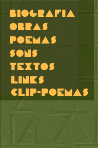

|
|  |
BIOGRAFIA Como tradutor de poesia, Augusto especializouse em recriar a obra de autores de vanguarda como Pound (Mauberley, The Cantos), Joyce (Finnegans Wake), Gertrude Stein e Cummings, ou os russos Maiakóvski e Khliébnikov, Traduziu também alguns dos grandes "inventores" do passado: Arnaut Daniel e os trovadores provençais, Donne e os "poetas metafíscos", Mallarmé e os Simbolistas franceses. Uma primeira antologia de sua obra tradutória, expandida depois em diversas monografias, é VERSO REVERSO CONTROVERSO (1978). Algumas de suas últimas publicações nesse campo: RIMBAUD LIVRE (1992), HOPKINS: A BELEZA DIFÍCIL (1997) e COISAS E ANJOS DE RILKE (2001). Como ensaísta é coautor de TEORIA DA POESIA CONCRETA, com Haroldo de Campos e Decio Pignatari, 1965, and autor de outros livros tratando de poesia de vanguarda e de invenção, como POESIA ANTIPOESIA ANTROPOFAGIA, 1978, O ANTICRÍTICO, 1986, LINGUAVIAGEM, 1987, À MARGEM DA MARGEM, 1989. Com Haroldo e Pignatari lutou pela revalorização da obra de Oswald de Andrade, e também redescobriu a obra olvidada do poeta maranhense Sousândrade (1832-1902), um precursor da poesia moderna com seu "Inferno de Wall Street" (1877) em REVISÃO DE SOUSANDRADE,1964). BALANÇO DA BOSSA (E OUTRAS BOSSAS), 1968-1974, reuniu seus estudos pioneiros sobre o Tropicalismo e a MPB assim como as suas intervenções no campo da música contemporânea tratando de Charles Ives, Webern, Schoenberg e os compositores brasileiros do grupo "Musica Nova". Ensaios posteriores enfocando a música e a poesia de Cage e as obra radicais de Varèse, Antheil, Cowell, Nancarrow, Scelsi, Nono, Ustvólskaia, entre outros, foram recolhidos no livro MÚSICA DE INVENÇÃO (1998). A partir de 1980, intensificou os experimentos com as novas mídias, apresentando seus poemas em luminosos, videotextos, neon, hologramas e laser, animações computadorizadas e eventos multimídia, abrangendo som e música, como a leitura plurivocal de CIDADECITYCITÉ (com Cid Campos),1987/ 1991. Seus poemas holográficos (em cooperação com Moyses Baumstein) foram incluídos nas exposições TRILUZ (1986) e IDEHOLOGIA (1987). Um videoclip do poema PULSAR, com música de Caetano Veloso, foi produzido por ele em 1984, numa estação Intergraph, com a colaboração do grupo Olhar Eletrônico. POEMA BOMBA e SOS, com música de seu filho, Cid Campos, foram animados numa estação computadorizada Silicon Graphics da Universidade de São Paulo, 1992-3. Sua cooperação com Cid, iniciada em 1987, ficou registrada em POESIA É RISCO (CD editado em 1995 pela PolyGram) e se desenvolveu no espetáculo de mesmo nome, uma performance "verbivocovisual" de poesia/música/imagem com edição de vídeo de Walter Silveira, apresentada em diversas cidades do Brasil e no exterior. Suas animações digitais - os CLIPPOEMAS - foram exibidas em 1997 numa instalação que fez parte da exposição Arte Suporte Computador, na Casa das Rosas, em São Paulo. Alguns dos seus poemas visuais e sonoros podem ser vistos/ouvidos também em www.ubu.com |